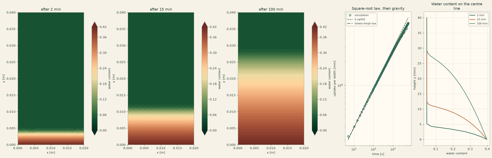
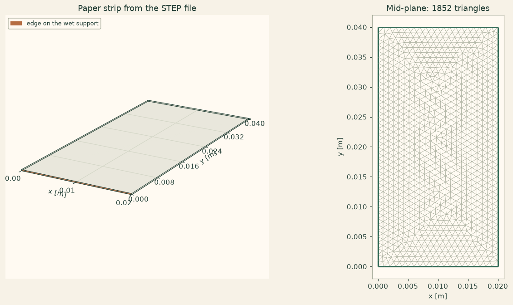

Docs › Examples › Wicking in a paper strip
Unsaturated porous flow · 2D
Wicking in a paper strip
A dry strip of filter paper standing on a wet support draws water up by capillary suction until gravity slows the rise.

What it computes
OneSimulation cuts the strip from a STEP file and solves the mixed-form Richards equation for the pressure head on linear triangles, with a van Genuchten retention and Mualem conductivity and gravity acting along the strip. Backward Euler keeps the stored water exact in every step and a damped Newton method follows the sharp front into the dry paper; the uptake comes from the integral of the water content. The script that builds the STEP file comes with the notebook.
What it checks
After one minute the uptake is 0.705 mm against S sqrt(t) = 0.720 mm from Parlange's sorptivity (2 % below) and 0.701 mm from the Green-Ampt rise; after 100 minutes gravity has slowed it to 0.85 S sqrt(t), and the Green-Ampt sharp-front estimate lies 3 % below the simulation at 10 minutes and 14 % below at 100 minutes, where the real front is diffuse.
Geometry
The notebook starts at the import of the CAD file paper_strip_wicking.step: STEP (AP242), readable by any CAD program, with the names of the faces that the boundary conditions use. Put it next to the notebook.

The geometry script
The script paper_strip_wicking_geometry.py builds the geometry with the CAD objects of OneSimulation and writes the file. Change a dimension there, run it, and run the notebook again.
"""Geometry of the OneSimulation example "Wicking in a paper strip".
Builds a strip of filter paper, 20 mm wide, 40 mm high and 0.2 mm thick, with the CAD objects of
OneSimulation and writes paper_strip_wicking.step. The faces keep their names x_min, x_max, y_min
(the edge dipped into water), y_max, z_min and z_max in the file; the example computes on the
mid-plane of the sheet.
"""
from onesim.cad.d3 import Box
strip = Box(length=0.020, width=0.040, height=0.0002)
strip.save("paper_strip_wicking.step")The notebook
The complete notebook, cell by cell. Run it to produce the figures and the comparison printout.
A strip of filter paper, 20 mm wide and 40 mm high, stands with its lower edge on a wet support that supplies water at a small suction of 10 cm water column, as in a tension infiltrometer. The pores of the dry paper suck the water up: fast at first, the wetted height growing with the square root of time, then ever slower as the weight of the lifted water balances the capillary suction. The water flow in the paper is unsaturated porous-media flow, the Richards equation for the pressure head \(h\),
with the van Genuchten water retention \(\theta(h)\) and the Mualem conductivity \(K(h)\) of the paper: porosity 0.7, \(\alpha=12\) 1/m, \(n=2.5\), saturated conductivity \(10^{-5}\) m/s.
| edge | condition | |---|---| | y_min, on the wet support | \(h_0=-0.1\) m | | x_min, x_max, y_max | no flow | | initial state | dry paper, \(h_i=-0.5\) m |
The strip comes from the CAD file paper_strip_wicking.step, written by paper_strip_wicking_geometry.py with the CAD objects of OneSimulation.
Reference. While gravity is still negligible the uptake per unit width grows as \(I=S\sqrt t\) (Lucas-Washburn behaviour, J. R. Philip, Soil Sci. 84 (1957) 257-264), with the sorptivity from Parlange's integral (J.-Y. Parlange, Soil Sci. 119 (1975) 158-161),
Later, gravity slows the rise. Treating the wetted zone as a sharp front driven by a constant suction \(h_f=S^2/(2K_0\Delta\theta)\), with \(K_0=K(h_0)\), gives Washburn's rise with gravity in the Green-Ampt form (W. H. Green, G. A. Ampt, J. Agric. Sci. 4 (1911) 1-24),
an approximation for the wetted height \(L\) that is accurate when the front is sharp; the uptake is then \(I=\Delta\theta\,L\).
import numpy as np
from onesim.cad.exchange import load
from onesim.meshing import TriangularMesher
from onesim.numerics import Numerics
from onesim.numerics.fem import FiniteElement, Lagrange
from onesim.numerics.linear import SparseDirect
from onesim.numerics.nonlinear import DampedNewton
from onesim.numerics.time import BackwardEuler
from onesim.physics.hydrodynamics import PressureHead, Richards, VanGenuchtenRetention
from onesim.simulation import Problem, Simulation
from onesim.simulation.initial_conditions import InitialValue
from onesim.visualization import plots, theme
from scipy.integrate import quad
theme.set()Geometry and mesh
section cuts the loaded strip at half thickness; \(x\) runs across the strip, \(y\) upwards from the wet support. Linear triangles of 1 mm.
sheet = load("paper_strip_wicking.step")
strip = sheet.section((0, 0, 1), origin=(0, 0, 1e-4))
width, height = strip.size[:2]
mesh = TriangularMesher(target_size=1e-3).generate(strip)
fig = plots.figure(1, 2, size=(12, 6))
plots.geometry(
sheet,
selection={"edge on the wet support": sheet.boundaries.y_min},
labels=False,
camera=plots.Camera(elevation=20, azimuth=-60),
title="Paper strip from the STEP file",
ax=fig[0],
)
plots.mesh(
mesh,
groups=("all",),
legend=False,
title=f"Mid-plane: {mesh.cell_count} triangles",
ax=fig[1],
)
plots.show()Model
Richards with the van Genuchten retention; gravity acts along \(-y\) of the section by default. Backward Euler keeps the storage change exact in every step (mixed form); 1200 steps of 5 s follow the first 100 minutes. The damped Newton method handles the sharp front in the dry paper.
paper = Richards(
domain=strip.domain(),
retention=VanGenuchtenRetention(alpha=12.0, n=2.5),
conductivity=1e-5,
saturated_water_content=0.7,
residual_water_content=0.0,
)
problem = Problem(
name="Paper strip wicking",
geometry=strip,
physics=(paper,),
initial_conditions=(InitialValue(paper.pressure_head, -0.5),),
boundary_conditions=(
PressureHead(physics=paper, boundary=strip.boundaries.y_min, value=-0.1),
),
)
numerics = Numerics(
spatial=FiniteElement(element=Lagrange(order=1), quadrature_order=2),
nonlinear_solver=DampedNewton(
linear_solver=SparseDirect(), relative_tolerance=1e-8, absolute_tolerance=1e-10
),
time_integrator=BackwardEuler(),
)
result = Simulation(problem=problem, mesh=mesh, numerics=numerics).run(
start_time=0.0, end_time=6000.0, time_step=5.0
)
water = result.field(paper.water_content)Results
The uptake per unit width is the integral of the water content gained, divided by the strip width; it is compared with \(S\sqrt t\). The wetted height is where the water content crosses half of the supplied water content \(\theta_0\) above \(\theta_i\) on the centre line. The uptake is compared with \(S\sqrt t\) and with the Green-Ampt rise.
theta_i, theta_0, k_0 = (
float(paper.volumetric_water_content(-0.5)),
float(paper.volumetric_water_content(-0.1)),
float(paper.hydraulic_conductivity(-0.1)),
)
sorptivity = np.sqrt(
quad(
lambda h: (theta_0 + paper.volumetric_water_content(h) - 2 * theta_i)
* paper.hydraulic_conductivity(h),
-0.5,
-0.1,
)[0]
)
uptake = water.integrate()
times, gained = (
np.asarray(uptake.times),
(np.asarray(uptake.values) - uptake.values[0]) / width,
)
y = np.linspace(0.0, height, 481)
centre = np.column_stack((np.full_like(y, width / 2), y))
wetted = lambda t: y[
np.argmax(water.evaluate(centre, time=t) < (theta_0 + theta_i) / 2)
]
suction = sorptivity**2 / (2 * k_0 * (theta_0 - theta_i))
rise = np.linspace(0.0, 0.999 * suction, 4000)
green_ampt = lambda t: np.interp(
t,
(theta_0 - theta_i)
* suction
/ k_0
* (-np.log(1 - rise / suction) - rise / suction),
rise,
)
print(
f"sorptivity (Parlange): {1e3 * sorptivity:.3f} mm/s^0.5, Green-Ampt suction head {1e3 * suction:.1f} mm"
)
print(
" t [s] uptake [mm] S sqrt(t) [mm] ratio Green-Ampt [mm] ratio wetted height [mm]"
)
for t in (60.0, 120.0, 300.0, 600.0, 1200.0, 3000.0, 6000.0):
i = int(np.argmin(np.abs(times - t)))
ga = (theta_0 - theta_i) * green_ampt(times[i])
print(
f"{times[i]:8.0f} {1e3 * gained[i]:12.3f} {1e3 * sorptivity * np.sqrt(times[i]):15.3f} {gained[i] / (sorptivity * np.sqrt(times[i])):8.3f}"
f" {1e3 * ga:16.3f} {gained[i] / ga:8.3f} {1e3 * wetted(times[i]):17.1f}"
)Figure
The water content in the strip after 2, 15 and 100 minutes; the uptake against \(S\sqrt t\) and the Green-Ampt rise; and the water content on the centre line at the same times.
nearest = lambda t: float(times[np.argmin(np.abs(times - t))])
fig = plots.figure(1, 5, size=(22, 7))
for panel, t in zip((fig[0], fig[1], fig[2]), (120.0, 900.0, 6000.0)):
plots.surface(
water,
time=nearest(t),
limits=(0.0, 0.4),
xlabel="x [m]",
ylabel="y [m]",
label="water content",
title=f"after {nearest(t) / 60:.0f} min",
ax=panel,
)
plots.line(
points={"simulation": (times[1:], 1e3 * gained[1:])},
reference={
"S sqrt(t)": (times[1:], 1e3 * sorptivity * np.sqrt(times[1:])),
"Green-Ampt rise": (
times[1:],
1e3 * (theta_0 - theta_i) * green_ampt(times[1:]),
),
},
scale="loglog",
xlabel="time [s]",
ylabel="uptake per width [mm]",
title="Square-root law, then gravity",
legend="upper left",
ax=fig[3],
)
plots.line(
y={
f"{t / 60:.0f} min": (water.evaluate(centre, time=nearest(t)), 1e3 * y)
for t in (120.0, 900.0, 6000.0)
},
xlabel="water content",
ylabel="height y [mm]",
title="Water content on the centre line",
legend="upper right",
ax=fig[4],
)
plots.show()Going further
Lay the strip flat (gravity=0.0 in Richards): the uptake then follows \(S\sqrt t\) for ever. Or change the pore-size parameter \(\alpha\) to see how far finer or coarser papers lift the water.